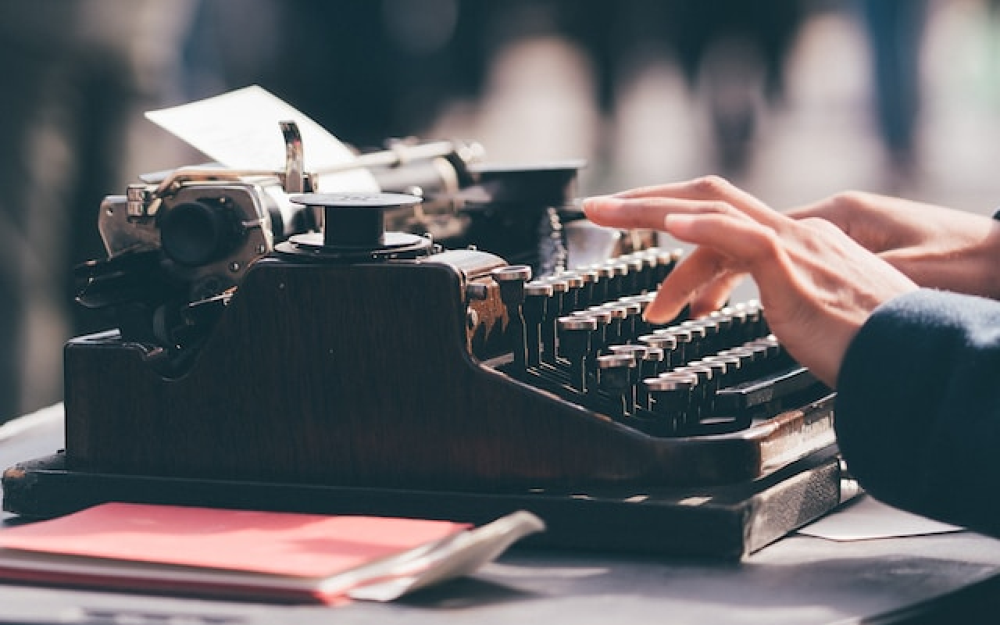
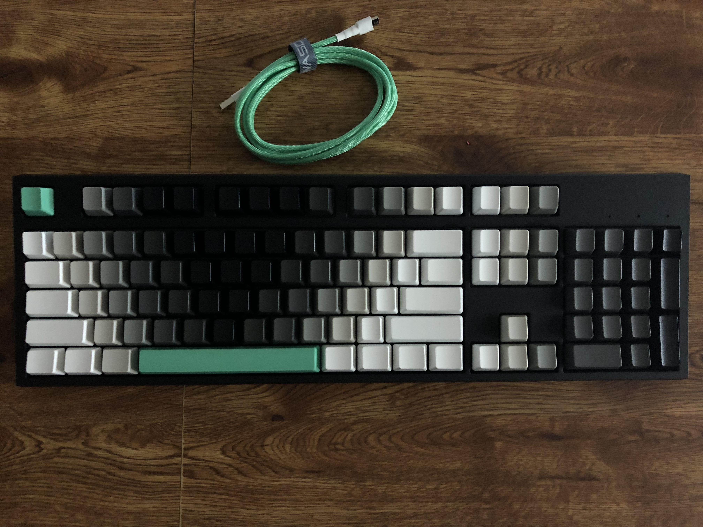

Написание текста - это процесс, который пережил множество изменений за последние несколько столетий. От печатных машинок до сенсорных экранов, люди всегда пытались улучшить свои методы работы с текстом. В XXI веке всё больше и больше людей работают с текстом в той или иной форме - типография, написание статей, программирование и многое другое. И чем больше люди работают с устройствами для набора текста, тем больше им хочется персонализировать своё рабочее пространство
Большинство людей использует мембранные клавиатуры для печати, в которых для нажатия используется слой мембраны соответственно - когда ты нажимаешь клавишу на такой клавиатуре, прорезиненный слой под клавишей продавливается, тем самым замыкая сеть и отправляя данные о нажатии клавиши компьютеру.
Многим людям удобно работать с мембранными клавиатурами - они дешёвые и тихие, что помогает людям не задумываться об устройствах, которыми они пользуются. Однако, мембранные клавиатуры не лишены проблем - они ощущаются “мягкими” (что в английском называют ёмким словом mushy), быстро ломаются, плохо поддерживают несколько одновременных нажатий и обычно не могут быть персонализированы. Именно из-за таких причин многие люди предпочитают механические клавиатуры

Механические клавиатуры используют специальные механические переключатели для регистрирования нажатий на клавиши. Этот способ позволяет клавиатуре дольше жить и стабильнее считывать нажатия относительно слоя мембраны. Однако, такие клавиатуры дороже и громче при использовании. Многие задумаются - а в чём смысл их использовать?
Главная фишка современных механических клавиатур это кастомизация - они имеют очень много вариаций форм, цветов и звучаний, так что любой пользователь сможет создать свой идеальный опыт печати. От кейкапов и кейсов до свитчей и стабилизаторов, всё что угодно может быть подобрано под предпочтения конкретного человека!
Цель этого сайта - стать введением в красоту механических клавиатур и предоставить ресурсы для вступления в замечательно хобби их сборки